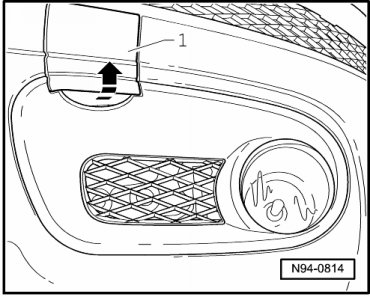
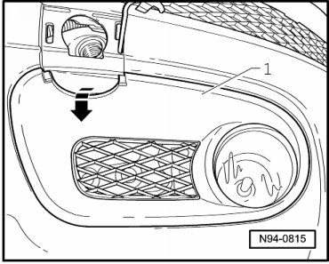
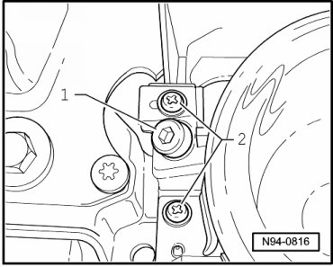
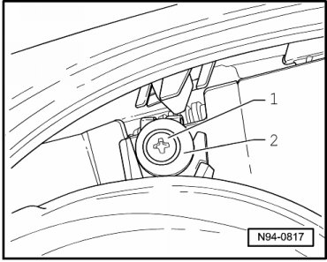
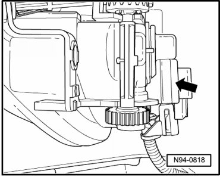

Fog Lamp
Fog Lamp
• Illustrations depict removal and installation at left fog lamp.
• Vehicles from 12/06, the form of the fog lamp cover cap has changed. The same procedure is used to remove and install the fog lamps.
Removing
- Switch off ignition, switch off all electrical consumers and remove ignition key.
- Release cover cap - 1 - from locking devices in - direction of arrow -.

- Release cover cap - 1 - in - direction of arrow - from locking devices and remove cover cap - 1 -.

- Remove screws - 2 -.

- Unscrew mounting bolt - 1 - above headlamp and remove washer - 2 -.

- Remove fog lamp housing from bumper and disconnect harness connector - arrow -.

Installing
Install in reverse order of removal, noting the following:
- Check headlamp for function.
- Check fog lamp adjustment and adjust if necessary.